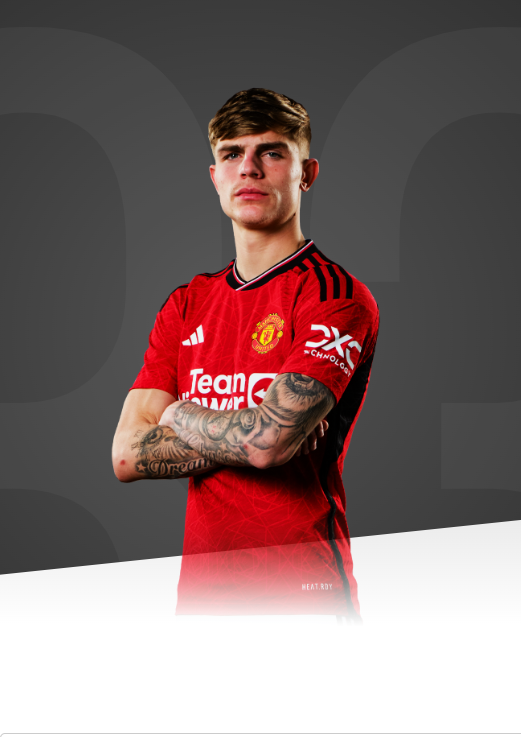

I think the modern full-back is an attacker as well. I like attacking. I like defending. I love getting up and down.

AGE
23
APPEARANCES
50
CLEAN SHEETS
1
BIOGRAPHY
A local lad who operates at full-back and can be delighted with his progress.
Williams made his Under-18s debut as a substitute for the final minutes of the 4-2 defeat to Reading in the final league outing of 2016/17.
The defender blossomed into a regular starter for the young Reds, making 22 appearances across domestic competitions and in the UEFA Youth League. Despite plenty of competition for a place, he worked hard to add a real attacking edge to his game and became a key component of a stylish side.
The teenager's performances were rewarded in April 2018, when he signed his first professional contract with the club, and he went on to captain the Under-18s on occasions under Neil Ryan.
A real highlight came when he was drafted into the senior squad for the sensational Champions League victory at Paris Saint-Germain, even if he did not quite make the bench on the trip. A committed defender with power and passion, he scored four times in 23 games for the Under-18s in 2018/19 and was introduced to the Under-23s, appearing three times before his full-time elevation to Premier League 2 level.
After a strong start to the 2019/20 campaign, during which he skippered the Under-23 side, Brandon was given his senior United debut at Old Trafford in the Carabao Cup tie against Rochdale on 25 September 2019. He managed to work his way into the side and scored his first Premier League goal in the 3-3 draw with Sheffield United in November 2019.
Williams went on loan to Premier League side Norwich City for the 2021/22 season and made 29 appearances for the Canaries in all competitions. Despite Norwich being relegated at the end of the season, Williams was a shining light on the left side of the defence and impressed ahead of his summer return to the Reds.
With injury affecting much of the first half of the campaign, Brandon made one senior appearance in 2022/23 - against Burnley in the Carabao Cup - and trained with our first team regularly. He also captained United's Under-21s three times, from the four matches he played for the young Reds.